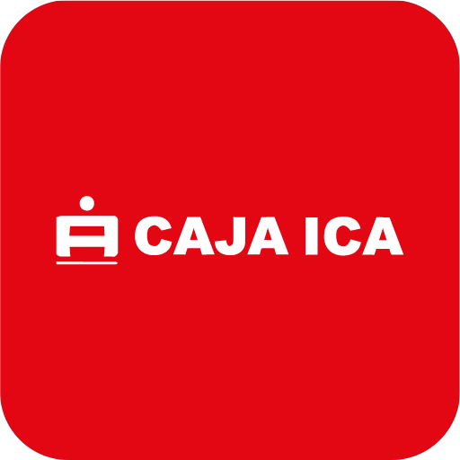
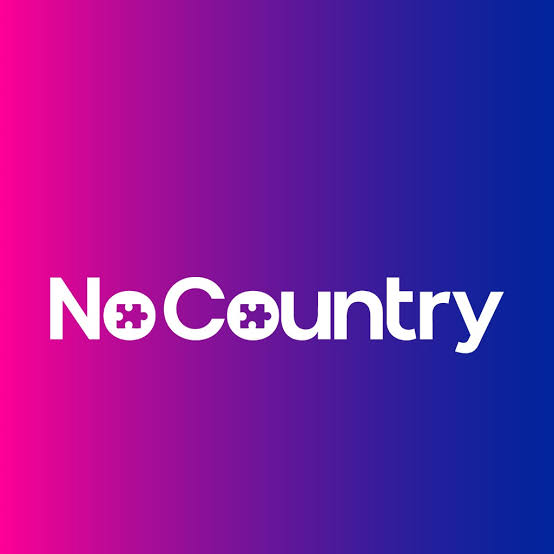

Languages
Java
Backend language
Java 17 appears in several project stacks, including AI Assistant, Zephyr Cygnus, and Cashier.
Backend & Generative AI Developer
I develop microservices and integrations with Java, Spring Boot, and SQL Server, as well as generative AI agents with Python. I have over 2 years of experience in the banking sector, also working with AWS services and Salesforce Marketing Cloud
Amazon Web Services
System.out.println("Hello, World!"); Selected work from my portfolio
Technologies documented across my projects and profile
Use the arrow controls, keyboard, swipe, or drag with the mouse to browse.
AI
Generative AI service
Included in the portfolio's AI technology stack.
Data
Document database
Listed in the DevBot Supermarket project stack.
Cloud & tooling
Cloud platform
The hero includes an introductory AWS course and the Alura Java and Spring Boot specialization.
My professional experience and education in software development, technology, and banking solutions
Amazon Web Services
The AWS Certified AI Practitioner is a foundational AWS AI credential, earned Sep. 24, 2026 and valid for three years through Sep. 24, 2029.
App Galaxy
Completed a 102-hour program covering Layered, Hexagonal, and Clean Architecture with Java and Spring, strengthening my approach to designing maintainable, scalable, and decoupled systems.

Reduced the time Logistics spent manually looking up service-receipt data by adding OCR to the core application. Built it with Java 25, Spring Boot, Spring AI, and Clean Architecture; used Amazon Textract with SNS/SQS for asynchronous processing and Bedrock to structure the extracted data. Added Mockito tests, SonarQube analysis, and OWASP Dependency-Check.
Enabled a Microsoft Copilot Studio assistant in Teams for Caja Ica executives, connected to a private SharePoint knowledge base, making institutional regulations, conference materials, and other documents faster to find and supporting informed decisions.
Connected the core to Salesforce Marketing Cloud through a Java 25/Spring Boot REST API that batches customers and transfers CSV files over SFTP. Configured Data Extensions, Automation Studio, and Journey Builder to segment messages by delinquency, credit type, and customer type, so Recoveries could manage templates.
Proposed and built a reusable AI-agent foundation with Python, FastAPI, uv, and hexagonal architecture, with SonarQube code analysis.
Proposed components: Qdrant for vector search, LiteLLM for model access, and a CI/CD workflow to publish and distribute the archetype through Nexus were proposed as components.
Made it easier for Caja Ica customers to block cards through Boty on WhatsApp. Enabled the feature with a Java and Spring Boot microservice and Circuit Breaker to handle failures when checking active cards.
Made agency-closing progress easier to track with a dashboard showing which branches had uploaded required documents and which were still pending. Migrated the ASP.NET Web Forms module to Angular and AG Grid, backed by a Java/Spring Boot REST API.
Reduced the response time of personal-data queries in central applications by optimizing the Java/Spring Boot REST API integrated with RENIEC.
Simplified tracking of administrative-area funds by centralizing in the core the records Operations Central had kept in Excel. Implemented fund controls and monthly, preventive, and surprise counts with C#, WPF, WCF, and SQL Server, plus reports with SQL Server Reporting Services.
Improved maintenance of core stored procedures by optimizing their logic and applying SQL Server development best practices.
Automated overnight billing for Contugas and Electrodunas using their customer lists, laying the groundwork for adding the flow to the Caja Ica mobile app. Built layered microservices with Java 11, Spring Boot 2.2.1, and SQL Server, using Strategy to select logic by service and contract.
I implemented an overnight migration process for legal-entity savings accounts. I adapted Indigo Persona to update customer data with C#, WPF, and WCF.

I participated in multicultural teams developing backend solutions with Java and Spring Boot, collaborating to solve technical challenges and meet delivery deadlines.
Data Science Research Perú
Hands-on training in data analytics with Python, Microsoft SQL Server, and Power BI.
Alura
REST API development using a layered approach and the Richardson maturity model, with work on MySQL databases.
Universidad Ibague
REST API development with layered organization, Richardson maturity principles, PostgreSQL administration, Spring Data, Spring Security, OpenAPI, Postman, Lombok, and Spring Boot.
Cjava Perú
The course covered Java libraries, frameworks, good practices, and design patterns for web applications.
Cjava Perú
Java SE and Jakarta EE component development, plus preparation for the Oracle Java 11 Developer exam (1Z0-819).
DMC Perú
Introductory AWS course covering cloud fundamentals, best practices, and console navigation.
Managed MSSQL Server queries for medical appointments, Power BI reports, and the GALENHOS system; also developed a Java desktop app to meet staff needs.
Universidad Nacional San Luis Gonzaga
The CV records a Bachiller in Systems Engineering.
Tell me what you’re building, or reach out through a direct channel.